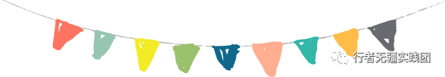
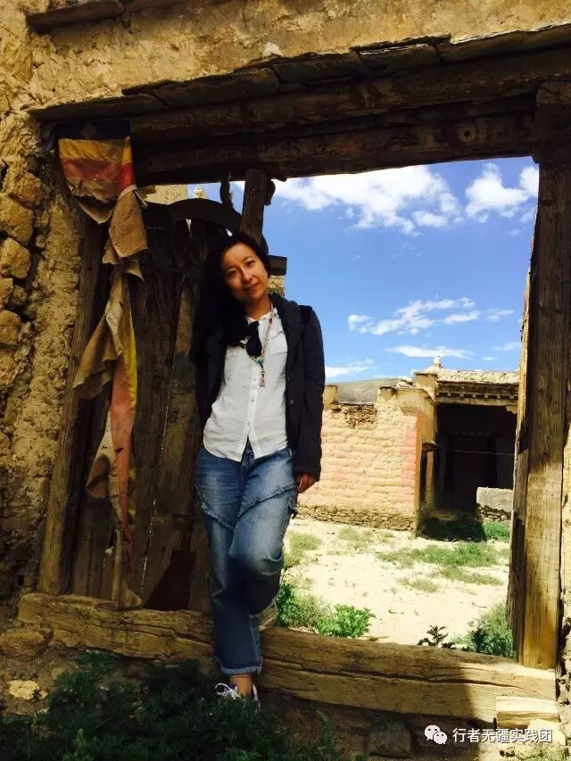
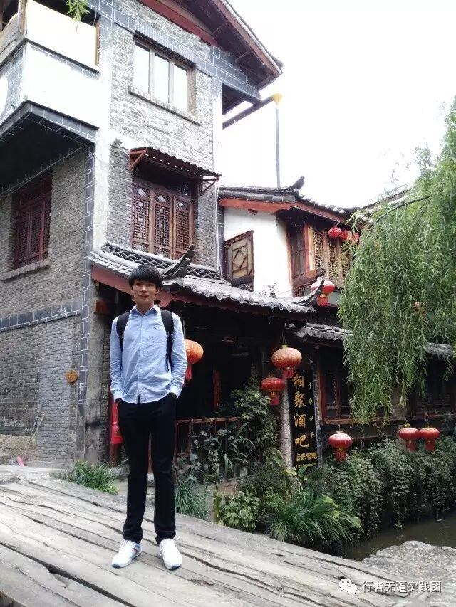
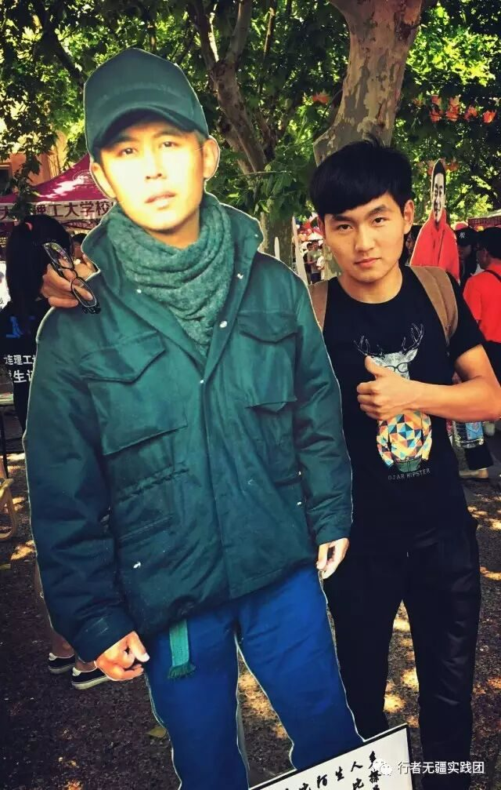
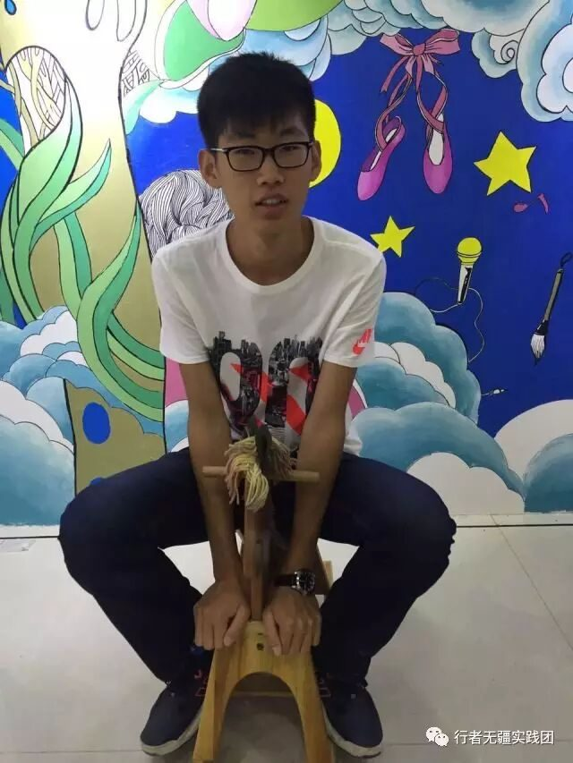
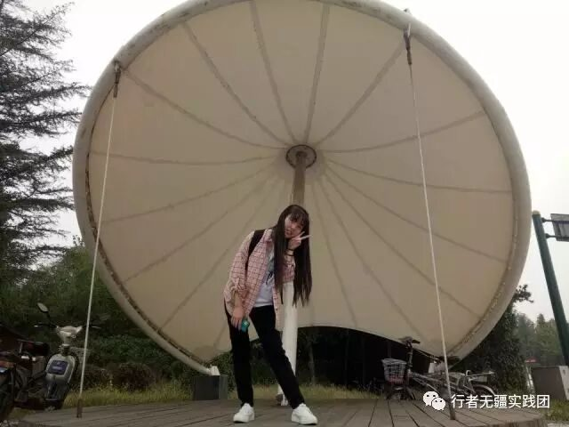
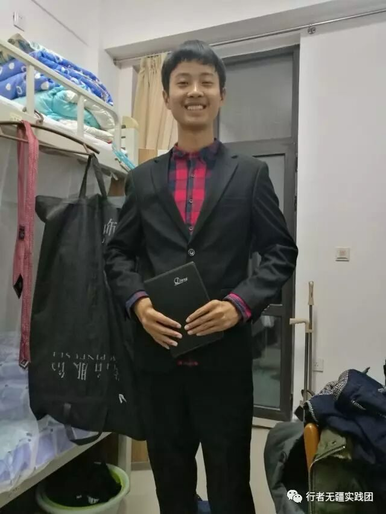
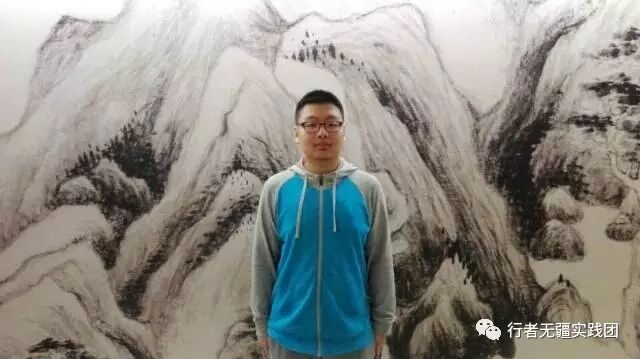
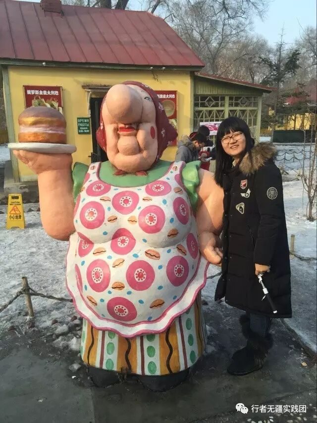

2016年终福利|转角遇见你
“行者无疆实践团”
成员介绍篇
2016年的我，想要做一个行者；
2017年的我，将会踏上行者的路！
抓住2016年的尾巴，
走进行者无疆实践团，
带你领略行者的魅力~

指导教师

邹靓靓
令希第一团总支成长导师
言必信，行必果。
队长
李含笑
14级 生物科学
主管文字、宣传

你看过很多书，走过很多路，见过很多人，经过很多事。后来书丢了、路忘了、人散了、事淡了，却都成为你的眉目、化作你的谈吐。
请追随行者无疆，来一场文化苦旅。
副队长

王钊
15级 海洋技术
主管外联、调研
感谢经历。

张正
14级 天然气化工
主管摄影、设计
苟利国家生死以
付钟宇
13级 应用化学
主管财务
身体和灵魂总有一个要在路上。
吕晨昕
15级 海洋技术
主管后勤保障
Just do it.

设计专员
巴雅琪
16级 应用化学
想要做一个有趣的人、一个有用的人、一个有技术的人，和一群有共同语言的朋友，做一些有意义的事情。
宣传专员
王均黎
15级 食品科学与工程

如果有来生，要做一棵树，站成永恒，没有悲欢的姿势，一半在土里安详，一半在风中飞扬，一半洒落阴凉，一半沐浴阳光，非常沉默，非常骄傲，从不依靠，从不寻找。

王梓腾
16级 应用化学
不必逗留着，去采着花朵来保存，因为这一路上，花儿自会继续开放。
文字纪实专员
尉旖涵
16级 经济学
智者无忧，行者无疆，勇者无畏，仁者无敌。
行者，走的路是无限的，赏的景是无限的，而追求，也是无限的。
崔丹
15级 电子商务
我想通过这次的社会实践尝遍山东的美食，通过美食了解这个地方。
李召美
16级 人力资源管理
我想做你的眼，带你领略这世界。
调研专员
蒋蕴涵
14级 环境生态工程
华丽常常伴随着伟大，幸运更经常地来自于简单。
吴迪
14级 过控海洋
关山万里路，拔剑起长歌。
张增其
16级 海洋技术
用别人浪费的的时间来使自己更优秀。在这次社会实践中，毫无调研经验的我将会挑战自己，用自己的努力做到出色，我相信我可以！
王鼎程
16级 石油化工
心有远方，行者无疆；行千里路，读万卷书。
后勤专员
孔超逸
14级 石油化工
我见青山多妩媚 ，料青山见我应如是。
颜博文
14级 过控海洋

我想游遍山东胜景，吃遍山东美食。

孙仪晨
15级 电子商务
我想了解山东文化，了解孔子的故乡。
王新航
16级 石油化工
爱读书，爱电影，爱群居，也爱独处；做自己想做的，和有趣的人做有趣的事。

我是行者酱，
一个集美貌帅气才华吃货于一身的实践团。
你不关注一下么~
◆ ◆ ◆ ◆
敲黑板，划重点，惊喜在这儿~
我们将会为第66、99、199、299、399、499（以此类推）名公众号关注者，第88、188、288、388、488（以此类推）名官方QQ（2758025831）好友送出两套精美明信片（实践结束后送上）。
◆ ◆ ◆ ◆
HAPPY NEW YEAR！
“行者无疆”实践团祝大家为2016年画上圆满句号，开启2017年的美好篇章。
欢迎继续关注
行者无疆实践团
责编：王均黎
审核：李含笑